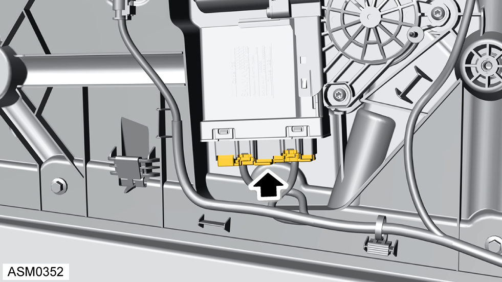

Motor - Window Regulator - Left Side
Print
Operation Code: 11.02.09-02
Removal
- Remove door trim assembly - left side. Refer to procedure.

- Disconnect harness connector from window motor.
- Remove 5x22 screws (x3) securing window motor to water deflector panel.
- Remove window motor from water deflector panel.
Do not carry out further disassembly if component is removed for access only.
- Disengage clips (x2) securing module to window motor.
- Carefully pull module down to disengage module from window motor.
- Remove module from window motor.
Installation
- Installation is the reverse of removal procedure except for the following:
- Check door glass alignment and reset window one touch facility. Refer to procedure.